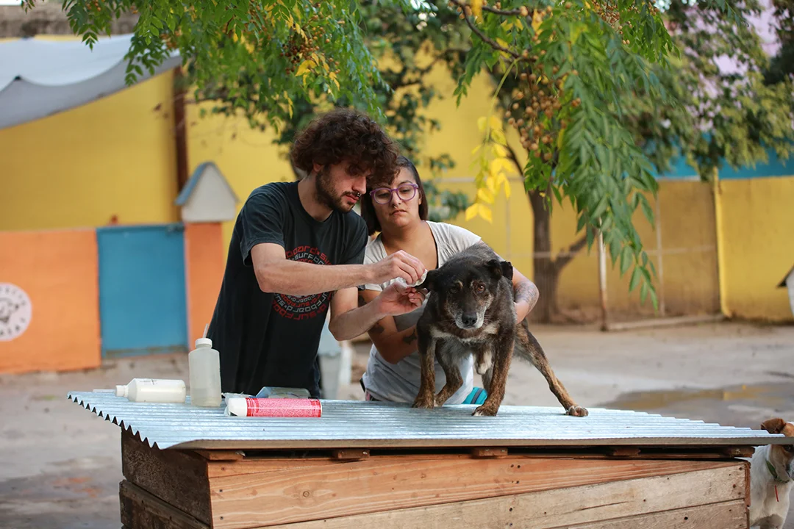

Bienvenidos a Huellitas
Rescatamos, cuidamos y damos amor a cada perrito.
Huellitas es una ONG de que nació en el año 2021 para rescatar perror en situación de calle y acompañarlos en el proceso de encontrar una familia.
Trabajamos con voluntarios, veterinarios y vecinos que creen que cada perro merece un hogar lleno decariño.
Rescatar perros en situación de calle, brindarles atención veterinaria y acompañarlos hasta que encuentren un hogar definitivo y lleno de cariño.
Podés adoptar, donar, ser voluntario o ser hogar de tránsito. Cada gesto, por chico que parezca, cambia la vida de un perro.
